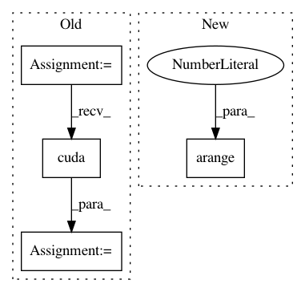

430beec651fe14e4f0f032cbc27e18a9ca415d90,examples/cora.py,,,#,11
Before Change
dataset = Cora(path, transform=transform)
data = dataset[0]
input, adj, target = data["input"], data["adj"], data["target"]
n = adj.size(0)
train_mask = torch.arange(0, n - 1000, out=torch.LongTensor())
test_mask = torch.arange(n - 500, n, out=torch.LongTensor())
if torch.cuda.is_available():
input, adj, target = input.cuda(), adj.cuda(), target.cuda()
train_mask, test_mask = train_mask.cuda(), test_mask.cuda()
input, target = Variable(input), Variable(target)
After Change
path = os.path.join(path, "..", "data", "Cora")
dataset = Cora(path, transform=TargetIndegreeAdj())
data = dataset[0].cuda().to_variable()
train_mask = torch.arange(0, data.num_nodes - 1000).long()
test_mask = torch.arange(data.num_nodes - 500, data.num_nodes).long()
In pattern: SUPERPATTERN
Frequency: 3
Non-data size: 4
Instances
Project Name: rusty1s/pytorch_geometric
Commit Name: 430beec651fe14e4f0f032cbc27e18a9ca415d90
Time: 2018-03-06
Author: matthias.fey@tu-dortmund.de
File Name: examples/cora.py
Class Name:
Method Name:
Project Name: rusty1s/pytorch_geometric
Commit Name: 6fac413c0c51c3be54de3a68801b43446ab98dee
Time: 2017-10-08
Author: matthias.fey@tu-dortmund.de
File Name: graph/grid.py
Class Name:
Method Name: grid_points
Project Name: rusty1s/pytorch_geometric
Commit Name: f586a8c0573402bd5457872e6fceda06a01ac834
Time: 2017-11-07
Author: matthias.fey@tu-dortmund.de
File Name: examples/cora.py
Class Name:
Method Name: